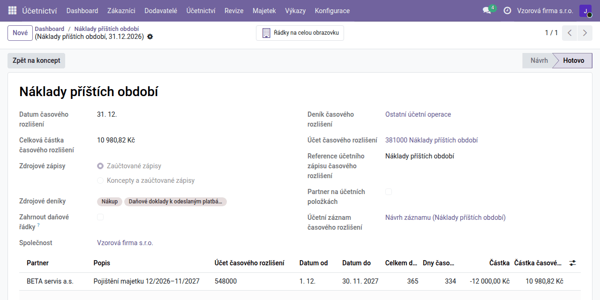
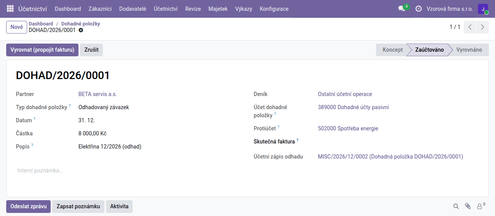
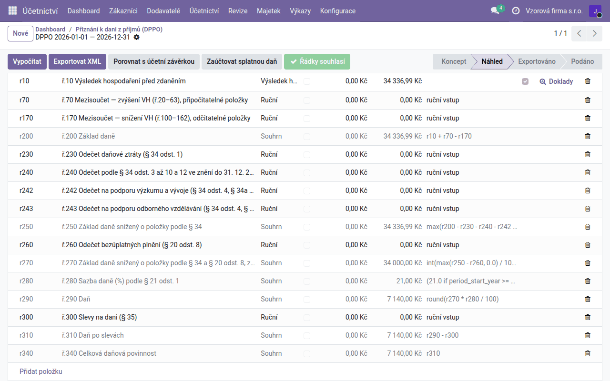
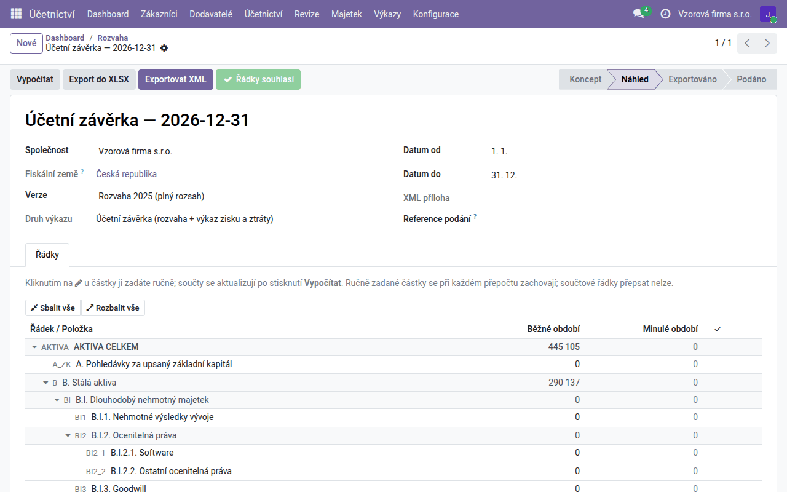

Návod k úloze
Konec roku
Uzavření účetního roku krok za krokem — inventarizace, časové rozlišení a dohadné položky, kurzové rozdíly, daň z příjmů, účetní závěrka, uzavření a otevření účetních knih a data uzamčení.
| Země | Česko |
|---|---|
| Edice | Odoo Community |
| Zahrnuje | account, account_lock_date_update, l10n_cz_inventory_verification, account_cutoff_base (dodává se samostatně), account_cutoff_start_end_dates, l10n_cz_account_cutoff, l10n_cssk_accrual, account_multicurrency_revaluation, l10n_cz_currency_revaluation, l10n_cssk_income_tax_base, l10n_cz_dppo, l10n_cssk_fs_base, l10n_cz_fs, l10n_cssk_fs_xlsx, l10n_cz_fiscal_year_closing, account_fiscal_year_closing, l10n_cssk_core |
K čemu tento návod slouží
Práce českého účetního na konci roku v pořadí, v jakém se v Odoo dělají, a s tím, co který krok zaúčtuje. Většina kroků má vlastní návod k modulu; tento je řadí za sebe a říká, co zkontrolovat, než půjdete dál.
| Krok | Kde |
|---|---|
| 1. Dokončit doklady roku | Než začnete |
| 2. Inventarizace | Účetnictví → Účetnictví → Inventarizace |
| 3. Časové rozlišení (381–385) | Účetnictví → Účetnictví → Časová rozlišení |
| 4. Dohadné položky (388, 389) | Účetnictví → Účetnictví → Transakce → Dohadné položky |
| 5. Kurzové rozdíly k rozvahovému dni | Účetnictví → Účetnictví → Uzávěrka → Přecenění měny |
| 6. Odpisy a odložená daň | Dlouhodobý majetek a odpisy |
| 7. Daň z příjmů | Účetnictví → Výkazy → Zákonné výkazy → Daň z příjmů (DPPO) |
| 8. Účetní závěrka | Účetnictví → Výkazy → Zákonné výkazy |
| 9. Uzavření a otevření účetních knih | účetní záznamy proti účtům 710, 702 a 701 |
| 10. Uzamčení roku | Účetnictví → Účetnictví → Data uzamčení |
Než začnete
- Každá vystavená i přijatá faktura a každý bankovní výpis roku jsou zaúčtovány a DPH za prosinec je uzavřena (Měsíční uzávěrka DPH).
- Účet 261000 Peníze na cestě je nulový a na účtech 221002 / 221003 jsou jen platby, které jsou opravdu na cestě (Bankovní účty).
- Odpisy jsou zaúčtovány k 31. prosinci (Dlouhodobý majetek a odpisy).
- Žádný doklad roku nezůstal ve stavu Návrh: seznam Účetnictví → Účetnictví → Transakce → Účetní záznamy filtrujte podle stavu.
Inventarizace
Účetnictví → Účetnictví → Inventarizace → Nové: jedna inventarizace za rok
a v ní inventurní soupis pro každou inventuru — sklad, pokladnu, skupinu
majetku, účet. U dokladové inventury s účtem načte tlačítko Načíst stavy
v účetnictví zůstatek účtu k rozvahovému dni z hlavní knihy a vy zapíšete
zjištěný stav. Modul vede a tiskne záznamy, které požaduje zákon
o účetnictví; rozdíly, které ukáže (manka, přebytky), zaúčtujete sami
interními doklady. Celý postup je v
l10n_cz_inventory_verification.
Časové rozlišení
Náklad nebo výnos vyfakturovaný v jednom roce, který zčásti patří do jiného, se přesune časovým rozlišením. Vychází z dat na řádcích dokladu:
- Na řádku přijaté nebo vystavené faktury vyplňte Datum od a Datum do — u ročního pojištění 1. 12. 2026 – 30. 11. 2027. Dělejte to při zadání dokladu, po celý rok.
- Na konci roku: Účetnictví → Účetnictví → Časová rozlišení, druh, Nové. Zadejte Datum časového rozlišení (31. prosince) a zkontrolujte Deník časového rozlišení — je-li prázdný, zvolte Ostatní účetní operace a jednou ho nastavte jako Výchozí deník časového rozlišení v nastavení, blok Časová rozlišení.
- Znovu vygenerovat řádky, zkontrolujte řádky a Vytvořit účetní záznam. Záznam je návrh s datem časového rozlišení: zkontrolujte ho a zaúčtujte.
| Menu | Účet | K čemu |
|---|---|---|
| Náklady příštích období | 381000 | přijatá faktura tohoto roku, která pokrývá i příští rok |
| Výnosy příštích období | 384000 | vystavená faktura tohoto roku, která pokrývá i příští rok |
| Výdaje příštích období | 383000 | přijatá faktura s datem příštího roku, která pokrývá tento rok |
| Příjmy příštích období | 385000 | vystavená faktura s datem příštího roku, která pokrývá tento rok |

Zaúčtování — pojištění 12 000 Kč na období 1. 12. 2026 – 30. 11. 2027, účtované na 548000; 334 z jeho 365 dnů patří do roku 2027:
| Doklad | Účet | MD | D |
|---|---|---|---|
| Zápis časového rozlišení, 31. 12. 2026 | 381000 Náklady příštích období | 10 980,82 | |
| 548000 Ostatní provozní náklady | 10 980,82 |
Zápis časového rozlišení se nestornuje automaticky: prvního dne nového
roku na něm použijte Vytvořit opravný doklad, aby se náklad vrátil na
548000 v roce, do kterého patří. Účty a nastavení popisuje
l10n_cz_account_cutoff.
Dohadné položky
Náklad roku, na který ještě nepřišla faktura a jehož výše je jen odhadnuta — prosincová elektřina, audit — je dohadná položka:
- Jednou: na účtech 388000 a 389000 v účtové osnově zaškrtněte Povolit párování plateb; česká osnova je dodává bez něj.
- Účetnictví → Účetnictví → Transakce → Dohadné položky → Nové: Partner, Typ dohadné položky (Odhadovaný závazek u nákladu), Datum 31. prosince, Částka bez DPH, popis, Deník, Účet dohadné položky (389000) a Protiúčet (nákladový účet).
- Zaúčtovat odhad.

| Doklad | Účet | MD | D |
|---|---|---|---|
| Odhad DOHAD/2026/0001, 31. 12. 2026 | 502000 Spotřeba energie | 8 000 | |
| 389000 Dohadné účty pasivní | 8 000 |
Až faktura přijde, zaúčtujte ji jako obvykle, vyberte ji na dohadné položce
v poli Skutečná faktura a klikněte na Vyrovnat (propojit fakturu):
odhad se stornuje k datu faktury, účet 389000 se vyrovná a v novém roce
zůstane jen rozdíl mezi odhadem a fakturou
(l10n_cssk_accrual).
Kurzové rozdíly
Pohledávky, závazky, bankovní účty a hotovost v cizí měně se k rozvahovému dni přecení kurzem ČNB:
- Jednou: na každém účtu, který se má přeceňovat (311, 321, devizové účty 221 a další podle vaší účetní), zaškrtněte Povolit přecenění měny a ověřte, že je v Odoo kurz k 31. prosinci.
- Účetnictví → Účetnictví → Uzávěrka → Přecenění měny: Datum přecenění a vymažte Začátek období přecenění — je předvyplněn prvním dnem běžného měsíce a vynechal by všechny otevřené položky z dřívějších měsíců.
- Potvrdit. Ztráty jdou na 563000, zisky na 663000, jako návrhy zápisů za účet, měnu a partnera.
Výkaz je v Účetnictví → Výkazy → Uzávěrkové zápisy → Výkaz přecenění měny;
podrobnosti a storno přecenění jsou v
l10n_cz_currency_revaluation.
Daň z příjmů
Účetnictví → Výkazy → Zákonné výkazy → Daň z příjmů (DPPO) → Nové: rok, Verze DPPDP9, Typ výkazu Řádné a Vypočítat.
- ř. 10 — výsledek hospodaření před zdaněním — se vypočte z účtových tříd 5 a 6.
- Položky, které ho zvyšují a snižují (ř. 70, ř. 170), a odečty se zadávají ručně přes Přepis: daňově neuznatelné náklady, rozdíl mezi účetními a daňovými odpisy z Porovnání účetních a daňových odpisů, daňová ztráta.
- Základ daně, zaokrouhlení na celé tisíce dolů, sazba a daň už plynou z toho.

Zaúčtovat splatnou daň zaúčtuje vypočtenou daň, 591 na stranu MD a 341
na stranu D. Udělejte to před účetní závěrkou, aby ukazovala výsledek po
zdanění. K podání propojte na přiznání vypočtenou Rozvahu a Výkaz zisku
a ztráty a zvolte Exportovat XML pro EPO
(l10n_cz_dppo).
Účetní závěrka
Účetnictví → Výkazy → Zákonné výkazy → Rozvaha (a Výkaz zisku a ztráty, Přehled o peněžních tocích, Přehled o změnách vlastního kapitálu) → Nové: rok, Verze — nabídne se plný rozsah; pro zkrácený vyberte verzi (zkrácený rozsah) — a Vypočítat.

- Řádky souhlasí v záhlaví říká, že každý řádek odpovídá svým účtům; Nesouhlasící řádky vypíše ty, které neodpovídají.
- Nepřiřazené účty vypíše účty se zůstatkem, které nevstupují do žádného řádku tohoto výkazu. U rozvahy má být seznam prázdný.
- AKTIVA CELKEM se musí rovnat PASIVA CELKEM. Rozdíl ve výši výsledku některého minulého roku znamená, že ten rok nebyl převeden na 431 — viz Uzavření a otevření účetních knih.
- Export do XLSX dá výkaz jako pracovní podklad; rozvaha a výkaz zisku a ztráty se podávají uvnitř přiznání k dani z příjmů.
Co který řádek obsahuje, jaké štítky účtů potřebuje plný výkaz zisku
a ztráty a jaká jsou omezení, je v
l10n_cz_fs.
Uzavření a otevření účetních knih
České účetnictví uzavírá rok přes účty 710 Účet zisků a ztrát a 702 Konečný
účet rozvažný a nový otevírá přes 701 Počáteční účet rozvažný. Lokalizace
dělá tyto tři účty účtovatelnými a dodává šablonu uzávěrky, která zápisy
vytvoří z hlavní knihy v Účetnictví → Účetnictví → Fiscal year closings
(l10n_cz_fiscal_year_closing).
Formulář nejdřív vypíše, na co se před uzavřením podívat. Co šablona účtuje
a co byste bez ní účtovali ručně:
- Jednou: založte pro ně deník typu Ostatní (například Uzávěrka roku) a uveďte ho v Účetnictví → Konfigurace → Nastavení, blok Česká / slovenská lokalizace, pole Deníky závěrky roku. Zákonné výkazy, přiznání k dani z příjmů a účetní knihy pak jeho zápisy vynechají; jinak by každý uzavřený účet ukazoval k poslednímu dni roku nulu.
- S datem 31. prosince, v tomto deníku:
| Zápis | MD | D |
|---|---|---|
| Uzavření nákladových účtů | 710000 | každý účet třídy 5 |
| Uzavření výnosových účtů | každý účet třídy 6 | 710000 |
| Výsledek hospodaření — zisk | 710000 | 702000 |
| Uzavření aktivních účtů | 702000 | každý účet se zůstatkem na straně MD |
| Uzavření pasivních účtů | každý účet se zůstatkem na straně D | 702000 |
- S datem 1. ledna nového roku zrcadlově poslední dva řádky proti účtu 701000 a výsledek uzavřeného roku: u zisku 701000 na stranu MD a 431000 Výsledek hospodaření ve schvalovacím řízení na stranu D.
- Po valné hromadě převeďte 431 na 428 nebo 429 vzorem v Účetnictví →
Účetnictví → Vytvořit zápis podle předkontace
(
l10n_cz_account_move_template).
Zůstatky k uzavření jsou v Účetnictví → Výkazy → Účetní výkazy OCA → Předvaha za daný rok (Účetní knihy a výkazy). Samo Odoo tyto zápisy k převodu zůstatků do nového roku nepotřebuje — vyžaduje je zákon o účetnictví a přenášejí výsledek roku na účet 431, odkud ho čte příští rozvaha.
Uzamčení roku
Až bude závěrka schválena a podána, nastavte v Účetnictví → Účetnictví → Data uzamčení Globální datum uzamčení na 31. prosince, a jakmile se už nic nemůže změnit, Datum pevného uzamčení, které už nelze posunout zpět (Uzavření období). Poté uzavřete rok daňových odpisů (Dlouhodobý majetek a odpisy).